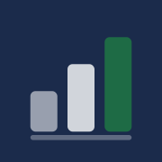
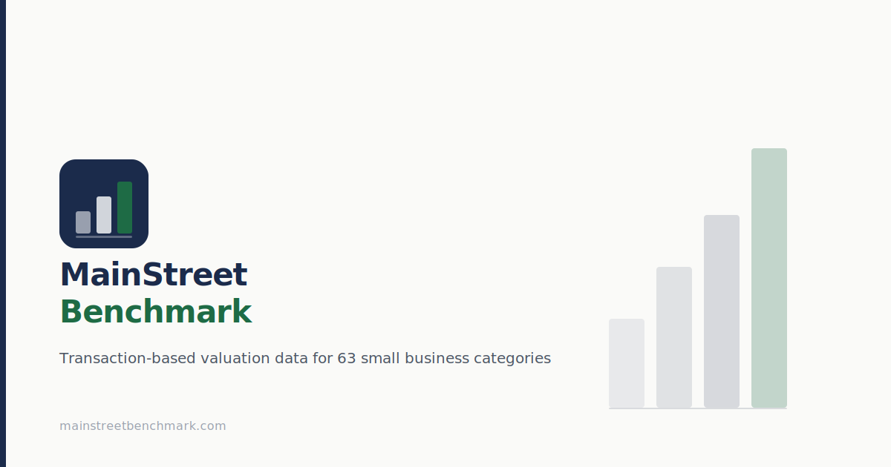

Note: In the nav the mark sits on a subtle white-opacity square rather than the full navy rounded-rect — avoids a box-inside-a-box on the already-navy nav background.


Used when any page is shared on LinkedIn, Twitter/X, Slack, iMessage, or cited by AI link preview crawlers. The decorative ascending bars (right side) reinforce the benchmark data concept without needing text. Domain shown bottom-left.
<!-- Favicon implementation — copy exactly into every page <head> --> <!-- Legacy ICO: covers IE11, old Edge, Windows pinned sites --> <link rel="icon" href="/favicon.ico" sizes="32x32"> <!-- SVG: modern browsers (Chrome 80+, Firefox 72+, Edge 80+) --> <!-- Scales perfectly at any resolution, smallest file --> <link rel="icon" href="/favicon.svg" type="image/svg+xml"> <!-- Apple Touch Icon: iOS Safari home screen, iMessage link previews --> <!-- No rounded corners in file — iOS adds them automatically --> <link rel="apple-touch-icon" href="/apple-touch-icon.png"> <!-- PWA Manifest: Android home screen, Chrome install prompt --> <link rel="manifest" href="/manifest.webmanifest"> <!-- Theme color: Chrome mobile address bar, Windows taskbar --> <meta name="theme-color" content="#1B2B4B"> <!-- Force light mode: overrides OS dark mode --> <!-- Per 12-VISUAL-DESIGN-SPEC.md: no dark mode implementation --> <meta name="color-scheme" content="light">
Cache-Control: public, max-age=31536000, immutable on all icon files. The SVG favicon will be served fastest and is the primary format for modern browsers.